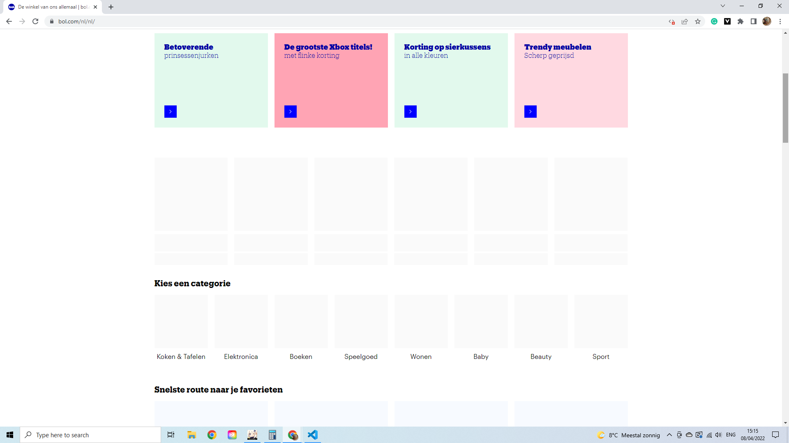
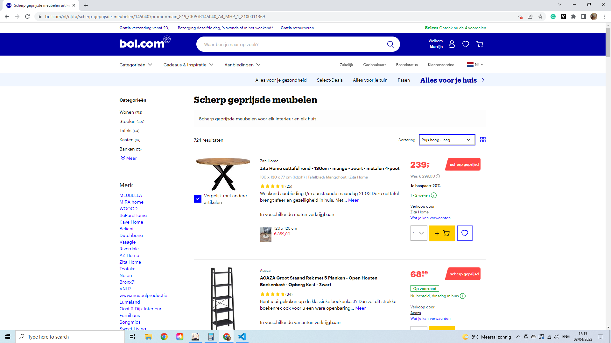
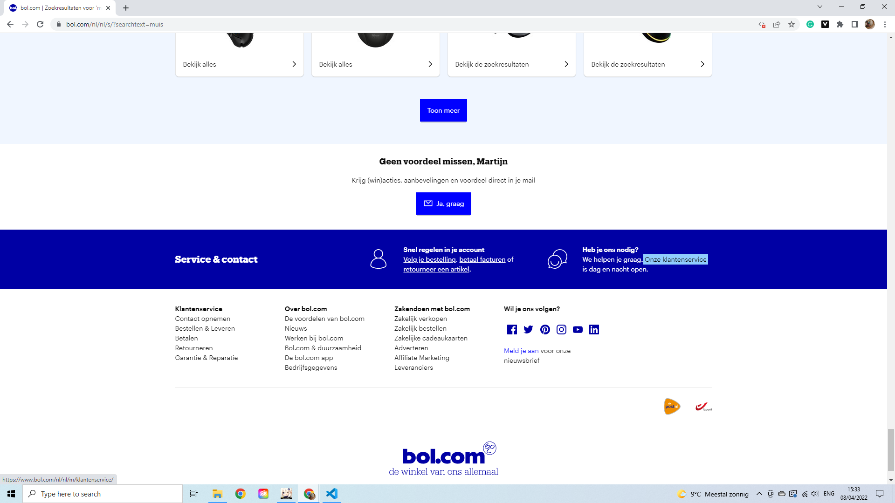
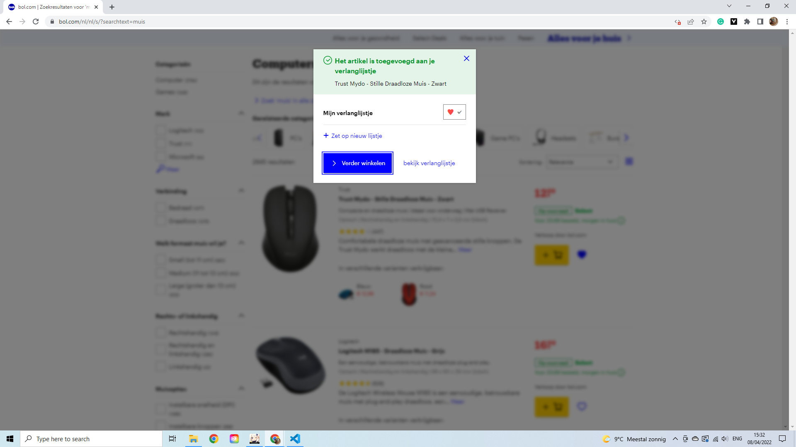
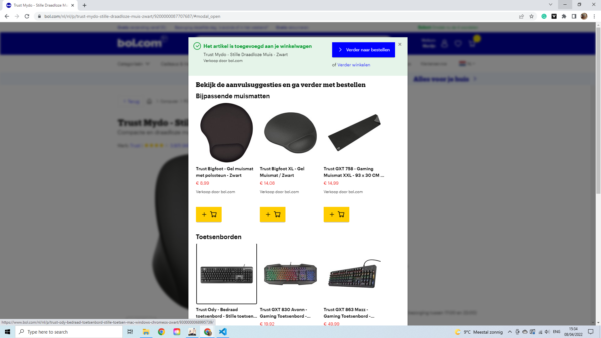

Op het eerste oog lijkt het bij Bol.com meteen alsog de hele website niet meer functioneerd zonder Javascript. Gelukkig is er meer dan het oog waarneemt.
Zo klopt het dat een paar afbeeldingen niet meer willen laden op bol.com, maar de website functioneerd (voor het grootste deel) nog wel.
Zo is het gelukkig nog mogelijk om naar de detailpagina te gaan, maar valt het al snel op dat sommige functies niet werken. Deze functies zijn o.a. sorteren, opslaan als favoriet, vergelijken en filteren.
Over het algemeen is Bol.com zonder Javascript nog een enorm goed werkende website, maar mist het een paar core-functionaliteiten waardoor een webshop zoals deze zo fijn is om te grbuiken.
Om een goede feeling te krijgen heb ik voor dit deel mijn trackpad volledig uitgezet met de fn F3 functie op mijn toetsenboord. Zo kan ik met TAB door de pagina heen geen. Mijn objecties is om een muis te bestellen.
Wat mij enorm snel opvalt is dat ik met de tab knop heeeeel de website eerst af moet om zo bij de 'ga naar bestellen' knop te komen.
 Wat me hierna ook nog opviel was dat als je eindelijk bij een bestellen knop kwam en je er perongeluk langs ging ik geen mogelijkheid wist om er 1 terug te gaan.
De website werkt nog keurig en je kunt overal komen, maar met alleen een tab knop kan het af en toe zorgen voor ergenissen en lang klikken voor je op de plek bent waar je moet zijn